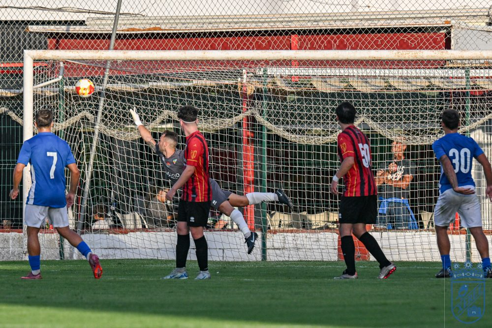
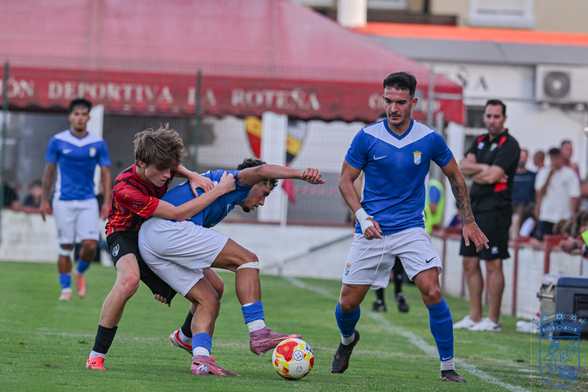
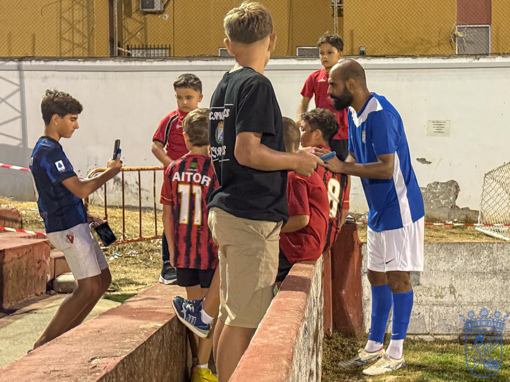

Xerez rout in Rota, overshadowed by the Salas scare
 Xerez CD
Xerez CDFali 24'
David Lachica 40'
Óscar Lorenzo 50'
Manu 60'
Leo 75'

Photo: Diario XerecistaThe blue-and-whites score half a dozen goals at UD Roteña's ground in their penultimate summer run-out, although the day will be remembered for the blow to the head that meant the left-back had to be taken away by ambulance
The match left little room for tactical analysis: it was total dominance from start to finish. Xerez CD sealed a comfortable rout at the Manuel Bernal against a UD Roteña side — from the Segunda Andaluza — who also took to the pitch with several players missing due to work commitments. The emphatic 0-6, however, ended up taking a back seat after the scare near the end, when Salas took a blow to the head and had to be treated and taken by ambulance to a medical centre.
Rotation and another attacking display
Molist wanted to spread the minutes, resting Rubén Mesa, who had played the full ninety minutes in the two previous friendlies against Real Jaén and Juventud Torremolinos. In the starting eleven, David Lachica partnered Manu Galán at centre-back, with Chacartegui and Guille Campos on either flank. Fali sat in front of the defence, supported in attack by Mario Peregrina and Ganfornina, with Zelu looking for space centrally and leaving the left flank to Chacartegui. Jaime Fernández stayed out on the right, and up front was Juan Ghia, a player on trial with the blue-and-whites.
Xerez CD's intentions were clear from the first whistle. Barely after kick-off, Juan Ghia had the first clear chance, although the home goalkeeper, Luis, responded well in the one-on-one. The warning became reality very soon after: in the 4th minute, a measured cross from Chacartegui was met by Ghia himself to open the scoring.
With possession entirely theirs and several attacks that did not find the target, Molist's men extended their lead shortly before the half-hour thanks to a spectacular strike from Fali, who placed a direct free kick just under the crossbar, leaving the Rota goalkeeper helpless. The visitors even came close to a third with a Zelu shot that hit the post, but the reward came five minutes before the break: from a corner delivered into the box by Zelu himself, Juan Ghia got the first header and David Lachica tapped in the rebound to make it 0-3, the score at half-time.

Photo: Diario XerecistaA complete change of team and more goals in the second half
The coach, who had already made a change in goal after 30 minutes — Alconchel for Pantoja — sent out a completely different eleven after the break. The back line was now made up of Moi, Josete, Salas and Sebas; Isuskiza and Raúl López formed the double pivot; Abel and Óscar Lorenzo played on the flanks, and up front were Jaime López and Manu.
This second group of players did not take long to find the net either. Óscar Lorenzo made no mistake from the spot after a foul on Abel inside the area, making it 0-4, and minutes later Jaime López almost extended the lead after a good cross from Salas, although his effort flew over the bar. The match had already lost intensity, practically turned into a training session, when the fifth arrived: a pass from Óscar Lorenzo that Manu converted. The final 0-6 came from Leo well into the second half.
The Salas scare
The good atmosphere of the rout cooled abruptly because of the mishap suffered by Salas, who collided with the opposing goalkeeper shortly after the fifth blue-and-white goal. The player was left hurt after the collision and, a few minutes later, began to feel dizzy, which is why the medical staff decided not to take any risks and called an ambulance to take him to a medical centre. A tense moment that brought the party in Rota to an end.
The anecdote: Fali, besieged by the youngest fans
Amid so many goals, there was also room for the night's heart-warming anecdote. On being substituted, Fali found himself surrounded by a group of children who ran to get a photo or ask for his autograph, causing a small commotion by the touchline that almost prevented him from reaching the tunnel. The midfielder, who had scored one of the goals of the match, stopped to patiently attend to all the youngsters waiting for him.
Match facts

Photo: Diario XerecistaUD Roteña: Luis; Navarro, David, Rober, Álex Granados; Curti, Parra, Manuel; Nacho, Riqui and Javi. Later came on: Fran, Gonzalo, Javi Mora, Juan, Plaíto, Puyana, Rafa, Piatti, Correto, Jesús and Juanma.
Xerez CD: Pantoja (Marcos Alconchel, 30'; Gabi Navarro, 60'); Chacartegui, Manu Galán, Fali, Zelu; Jaime Fernández, Mario Peregrina, Guille Campos, David Lachica, Óscar Ganfornina and Juan Ghia. In the second half came on: Josete, Moi, Raúl López, Isuskiza, Jaime López, Salas, Óscar Lorenzo, Manu, Abel and Sebas. Later, Leo for Salas and Dani for Manu.
Goals: 0-1 (4') Juan Ghia. 0-2 (24') Fali, direct free kick. 0-3 (40') David Lachica. 0-4 (50') Óscar Lorenzo, penalty. 0-5 (60') Manu. 0-6 (75') Leo.
Referee: Saúl González Vargas.
Notes: The match was played at the Manuel Bernal stadium in Rota, on a pitch in excellent condition and with a notable turnout of fans in the stands.
🇪🇸 Leer en español ← Back to home